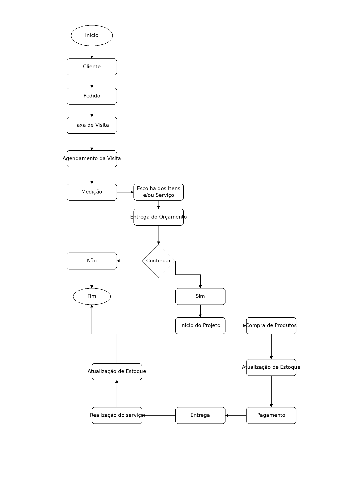
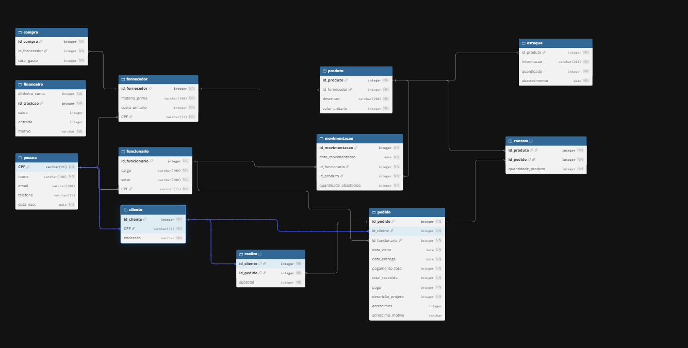

Projeto ERP — Personal Pisos
Trabalho acadêmico de levantamento de processos, requisitos e modelagem de banco de dados para uma empresa de pisos e decoração.
1. Caracterização da empresa
- Nome: Personal Pisos
- Segmento: Design de Interiores e Acabamentos.
- O que vende: Soluções completas para ambientação, indo desde revestimentos de piso (vinílicos, laminados, porcelanatos) e proteção solar (persianas, cortinas sob medida) até elementos de decoração geral (papel de parede, tapetes, painéis).
- Principais Clientes: Pessoas físicas reformando ou construindo a casa própria, arquitetos/designers de interiores parceiros e pequenos construtores.
- Setores: Marketing, Vendas, Gerência, Finanças e Contabilidade, RH e Logística/Instalação.
- Funcionamento Operacional: Modelo de negócio híbrido (digital e showroom físico).
- Dados: Dados do Cliente, Dados Logísticos, Dados Técnicos e Dados Financeiros.
2. Justificativa da escolha
O grupo escolheu a empresa porque ela já possui um site que precisa de melhorias estruturais e da implementação de um banco de dados organizado para gerenciar suas informações. Além disso, há facilidade de acesso aos processos reais, pois uma das integrantes atua diretamente na empresa.
3. Identifique os processos de negócio.
Cliente -- Solicita orçamento -- Projeto -- Agendamento de visita -- Medição -- Compra de produtos -- Pagamento -- Entrega --Montagem/Instalação -- Atualização do estoque.
- Quem participa? Cliente, vendedor, designer de interiores, montador e financeiro.
- O que inicia o processo? O cliente solicita um orçamento ou procura um produto específico.
- O que acontece? É realizado o orçamento, o projeto é definido e, quando necessário, é agendada uma visita para realizar a medição do ambiente. Após a aprovação, ocorre a compra dos produtos, o pagamento, a entrega e a montagem/instalação.
- Que informação é gerada? Orçamento, medidas do ambiente, pedido de venda, produtos vendidos, nota fiscal, comprovante de pagamento e atualização do estoque.
- Qual é o resultado? O ambiente do cliente é montado/instalado e a venda é concluída.
4. Identifique os problemas e necessidades
- Onde existe retrabalho?
Nas obras, quando acontece algum problema em uma instalação ou serviço que não foi considerado a possibilidade durante a visita técnica realizada pré obra; Na administração ou venda quando não foram seguidos todos os processos necessários. - Existem informações duplicadas? Poucas, mas existem, pois a loja está reestruturando o sistema.
- Existem informações perdidas? Às vezes, por isso a loja está modernizando o sistema.
- A empresa utiliza planilhas? Sim, ela utiliza.
- Existem controles manuais? Poucos, a empresa investiu mais nos sistemas de ERP e planilhas e agora está modernizando o sistema.
- Os setores compartilham informações? Sim, compartilham.
- É difícil encontrar informações? De acordo com as informações passadas pelo dono não é.
- Existem erros de cadastro? Raramente.
- É difícil acompanhar estoque, vendas, clientes ou funcionários? Não, desde que esteja tudo devidamente cadastrado. Porém hoje o estoque é algo que dá um pouco mais de trabalho pois a empresa não possui um colaborador específico para organizar/catalogar.
- Existem problemas para gerar relatórios? Não.
- PROBLEMAS E NECESSIDADES
- Problema: Problemas não identificados durante a visita técnica pré-obra.
-
Consequência: Retrabalho durante a instalação ou execução do serviço;
-
Problema: Processos de administração ou venda não seguidos corretamente.
-
Consequência: Retrabalho e possíveis atrasos nos processos;
-
Problema: Informações duplicadas durante a reestruturação do sistema.
-
Consequência: Necessidade de reorganização e conferência dos dados;
-
Problema: Possibilidade de perda de informações.
-
Consequência: Dificuldade para manter todos os dados organizados e disponíveis;
-
Problema: Uso de planilhas junto aos sistemas.
-
Consequência: Necessidade de modernização e integração dos controles;
-
Problema: Controle de estoque sem colaborador específico.
-
Consequência: Maior dificuldade e trabalho para acompanhar o estoque;
-
Problema: Informações dependentes de cadastro correto.
- Consequência: Possibilidade de dificuldades no acompanhamento quando há falhas no cadastro.
5. Requisitos funcionais
-
RF1 - Cadastro com os dados pessoais do cliente, como e-mail pessoal, número de celular, nome completo, CPF ou CNPJ, data de nascimento e CEP, juntamente com a verificação em dois fatores durante a autenticação.
-
RF2 - Todo projeto realizado deve ter a emissão de um relatório contendo informações desde o planejamento até a instalação, incluindo materiais utilizados, custos e etapas concluídas.
-
RF3 - O sistema deve disponibilizar um canal de contato entre cliente e atendente para dúvidas e solicitações de alterações referentes ao projeto, mantendo o histórico das conversas.
-
RF4 - O sistema deve permitir o controle da entrada e saída de produtos do estoque, registrando as quantidades movimentadas e os respectivos valores financeiros.
-
RF5 - O sistema deve permitir que o atendente crie orçamentos prévios de serviços para os clientes, informando o período previsto de execução, os itens desejados, os valores e um prazo de validade configurável (ex.: 7 dias).
-
RF6 - O sistema deve registrar o estilo de decoração desejado pelo cliente, incluindo preferências de cores, materiais e acabamentos, para auxiliar na elaboração do projeto e do orçamento.
-
RF7 - O sistema deve registrar todas as etapas do processo, desde a compra dos materiais com os fornecedores até a instalação dos produtos no ambiente do cliente.
-
RF8 - O sistema deve permitir o cadastro e a atualização da disponibilidade comercial dos produtos, indicando quais podem ou não ser vendidos, independentemente da quantidade física disponível em estoque.
-
RF9 - Toda alteração no status de um projeto deve ser registrada no sistema, incluindo a data da alteração, o status e o usuário responsável, utilizando estados previamente definidos, como em planejamento, em execução, aguardando aprovação ou concluído.
-
RF10 - A aprovação de um projeto pelo cliente deve ser registrada com a data da aprovação, a identificação do cliente responsável e a versão do projeto aprovada.
-
RF11 - O sistema deve permitir o cadastro de fornecedores, armazenando informações como nome, CPF ou CNPJ, telefone, endereço e materiais fornecidos.
-
RF12 - O sistema deve permitir o registro e o acompanhamento dos pagamentos relacionados aos projetos, incluindo valores pagos, valores pendentes, datas de pagamento e situação financeira de cada pedido.
-
RF13 - O sistema deve permitir o agendamento de medições, visitas técnicas e instalações, registrando data, horário, endereço, profissional responsável e projeto relacionado.
-
RF14 - O sistema deve permitir o cadastro e a atualização de produtos e materiais, armazenando informações como código identificador, descrição, categoria, unidade de medida, preço e fornecedor relacionado, quando aplicável.
6. Requisitos não funcionais
-
RNF1 – O sistema deve fazer backup dos dados todos os dias à 00:00 (meia noite) ou sempre que houver uma atualização.
-
RNF2 - O sistema deve funcionar 24/7 (24 horas por dia durante 7 dias por semana).
-
RNF3 - O sistema deve exigir autenticação por login e senha para permitir o acesso às funcionalidades restritas.
-
RNF4 - O sistema deve controlar o acesso às informações de acordo com o perfil do usuário, como administrador, designer de interiores e funcionário.
-
RNF5 - Os dados pessoais dos clientes devem ser protegidos de acordo com a Lei Geral de Proteção de Dados (LGPD).
-
RNF6 - O sistema deve utilizar um banco de dados relacional para garantir a organização e a integridade das informações cadastradas.
-
RNF7 - O sistema deve validar os dados inseridos nos formulários, impedindo o cadastro de informações em formatos inválidos.
-
RNF8 - Os valores monetários devem ser armazenados e processados com precisão decimal, evitando erros de arredondamento nos cálculos financeiros.
-
RNF9 - O sistema deve manter um padrão de nomenclatura para tabelas, campos e relacionamentos do banco de dados, facilitando sua manutenção.
-
RNF10 - O código-fonte do sistema deve ser organizado e documentado para facilitar futuras correções e atualizações.
-
RNF11 - O sistema deve registrar logs de erros e falhas técnicas para facilitar a identificação e a correção de problemas.
-
RNF12 - O sistema deve permitir a manutenção e a atualização de seus componentes sem comprometer a integridade dos dados armazenados.
7. Regras de negócio
- RN1: Um mesmo item não pode ser vendido para mais de um cliente.
- RN2: Um sinal de 35% do valor total da compra deve ser pago à vista, e o restante pode ser parcelado em até 10x sem juros.
- RN3: Calcular o valor total do pedido levando em consideração o material escolhido, a compra com o fornecedor para preenchimento do estoque, a quantidade de material que será usado (com base na medida feita) e a instalação.
- RN4: Cancelamento em até 7 dias após o pagamento do sinal, caso contrário o valor pago não é devolvido e o cliente escolhe outro produto ou material se desejar.
- RN5: Todo cliente deve possuir um cadastro único no sistema, contendo nome completo, CPF ou CNPJ, telefone, e-mail e endereço.
- RN6: Cada projeto de design de interiores deve estar vinculado a um único cliente responsável pela contratação do serviço.
- RN7: Um cliente pode contratar vários projetos de design de interiores, mas cada projeto deve possuir um identificador único.
- RN8: Todo projeto deve possuir uma data de início prevista e uma data de entrega prevista.
- RN9: Cada ambiente deve possuir medidas registradas antes da definição dos materiais e móveis que serão utilizados no projeto.
- RN10: Todo material cadastrado no banco de dados deve possuir código único, descrição e preço de custo.
- RN11: A quantidade de materiais disponível em estoque deve ser atualizada sempre que houver entrada por compra ou saída para uso em um projeto.
- RN12: Toda compra de materiais realizada pela empresa deve estar vinculada a um fornecedor já cadastrado no sistema.
- RN13: Cada pedido de compra de materiais deve registrar a data da compra, os materiais adquiridos, suas quantidades e os respectivos valores unitários.
- RN14: Todo serviço de instalação contratado deve estar vinculado a um projeto específico e possuir descrição, valor e prazo previsto para execução.
- RN15: Cada funcionário ou profissional responsável por um projeto deve estar cadastrado no sistema e possuir uma função definida.
- RN16: Um projeto pode ter vários profissionais responsáveis por diferentes atividades, mas cada atividade deve possuir um responsável definido.
- RN17: Toda alteração no status de um projeto deve ser registrada no sistema, utilizando estados previamente definidos, como em planejamento, em execução, aguardando aprovação ou concluído.
- RN18: A aprovação de um projeto pelo cliente deve ser registrada com a data da aprovação e a identificação do projeto correspondente.
- RN19: Um mesmo item não pode estar em outro estoque ao mesmo tempo.
8. Identifique as restrições e políticas organizacionais
-
Quem pode aprovar uma operação? Apenas os Gerentes/Dono podem realizar operações.
-
Quem pode alterar determinado cadastro? Todos os cadastros podem ser editados pelos clientes, porém somente o gerente pode excluir as informações.
-
Limites de desconto? Toda compra possui um limite de 5 a 10% de desconto baseado no valor total da compra.
-
Condições de pagamento? É possível pagar à vista ou parcelado (sendo no parcelado necessário um sinal de 35% e o restante pode ser feito em até 10x sem juros).
-
Regras de cancelamento As regras de cancelamento seguem o Código de Defesa do Consumidor, sendo 7 dias para devolução total do valor gasto, caso já tenha havido algum valor gasto com compra de material, isso será negociado diretamente com o cliente.
-
Políticas de estoque O estoque é conferido uma vez por mês e é abastecido conforme a realização das vendas, pois a loja não trabalha com estoque de todos os produtos.
-
Regras de acesso às informações A loja segue a LGPD - Lei Geral de Proteção de Dados, ou seja, ela informa onde serão utilizados os dados dos clientes, coleta apenas as informações necessárias e possui medidas de segurança contra o vazamento de dados.
-
Existe alguma decisão da empresa que precisa ser respeitada pelo sistema? Sim, algumas coisas são permitidas apenas com autorização do gerente. Como: Desconto maior que 5%; Exclusão de dados do sistema; Outros métodos de pagamento, como boleto.
9. Fluxograma dos principais processos

10. Dicionário de dados conceitual
| Entidade | Atributo | Descrição | Regra / Observação |
|---|---|---|---|
| Pessoa | CPF |
Identificador único da pessoa | PK - Obrigatório e único |
| Pessoa | Nome |
Nome completo | Obrigatório |
| Pessoa | Email |
Correio eletrônico | Formato de e-mail válido |
| Pessoa | Telefone |
Telefone de contato | Obrigatório |
| Pessoa | Data_Nascimento |
Data de nascimento | Formato Data |
| Cliente | ID_Cliente |
Identificador do cliente | PK - Auto incremento |
| Cliente | Endereço |
Endereço completo para entrega | Obrigatório |
| Cliente | CPF |
CPF da pessoa associada | FK referenciando Pessoa(CPF) |
| Funcionário | ID_Funcionário |
Identificador do funcionário | PK |
| Funcionário | Cargo |
Função na empresa | Ex: Vendedor, Gerente |
| Funcionário | Setor |
Setor de atuação | Ex: Vendas, Logística |
| Funcionário | CPF |
CPF da pessoa associada | FK referenciando Pessoa(CPF) |
| Fornecedor | ID_Fornecedor |
Identificador do fornecedor | PK |
| Fornecedor | Matéria-Prima |
Descrição do insumo | Texto |
| Fornecedor | Custo_Unitario |
Custo de aquisição do item | Valor monetário |
| Fornecedor | CPF |
Documento do responsável/empresa | FK referenciando Pessoa(CPF) |
| Compra | ID_Compra |
Registro da ordem de compra | PK |
| Compra | ID_Fornecedor |
Código do fornecedor | FK referenciando Fornecedor |
| Compra | Total_Gasto |
Valor gasto na compra | Valor monetário |
| Produto | ID_Produto |
Código identificador do produto | PK |
| Produto | Descrição |
Especificação técnica e nome | Texto |
| Produto | Valor_Unitario |
Preço de venda ao consumidor | Valor monetário |
| Produto | ID_Fornecedor |
Código do fornecedor | FK referenciando Fornecedor |
| Estoque | ID_Produto |
Código do produto em estoque | FK referenciando Produto |
| Estoque | Informação |
Detalhes do lote e armazenamento | Texto |
| Estoque | Quantidade |
Unidades/m² em estoque | Numérico inteiro/decimal |
| Estoque | Abastecimento |
Frequência de reposição | Semanal ou Mensal |
| Pedido | ID_Pedido |
Identificador único do pedido | PK |
| Pedido | ID_Cliente |
Código do cliente | FK referenciando Cliente |
| Pedido | ID_Funcionário |
Identificador do funcionário | FK referenciando Produto |
| Pedido | Data_Entrega |
Data prevista de entrega | Formato Data |
| Pedido | Data_Visita |
Data prevista de instalação | Formato Data |
| Pedido | Total_Recebido |
Valor final do pedido | Valor monetário |
| Pedido | Pago |
quantia paga | valor monetário |
| Pedido | Descrição_Projeto |
descrição do projeto | inteiro obrigatório |
| Pedido | Acréscimos |
Custos extras (frete/mão de obra) | Valor monetário |
| Pedido | Acréscimo_Motivo |
motivação | caractere |
| Realiza | ID_Cliente |
Código do cliente | FK referenciando Cliente |
| Realiza | Código_Pedido |
Código do pedido | FK referenciando Pedido |
| Realiza | Subtotal |
Valor acumulado do cliente no pedido | Atributo próprio do relacionamento |
| Contém | Código_Pedido |
Código do pedido | FK referenciando Pedido |
| Contém | Código_Produto |
Código do produto | FK referenciando Produto |
| Contém | Quantidade_De_Produtos |
Quantidade comprada do produto | Numérico |
| Movimentação | ID_Movimentação |
Identificador único da movimentação | PK |
| Movimentação | ID_Funcionário |
Identificador do funcionário | FK referenciando Produto |
| Movimentação | ID_Produto |
Código do produto em estoque | FK referenciando Produto |
| Movimentação | Data_Movimentação |
data da movimentação | data |
| Movimentação | Quantidade_Abastecida |
quantidade abastecida | inteiro obrigatório |
| Financeiro | ID_Transição |
Identificador único das transações | PK |
| Financeiro | Dinheiro_Conta |
quantidade monetária em conta | inteiro e obrigatório |
| Financeiro | Saída |
identificador das saídas | inteiro |
| Financeiro | Entrada |
Identificador das entradas | inteiro |
| Financeiro | Motivo |
motivação das transações | caractere obrigatório |
11. Entidades
Pessoa – Cliente – Funcionário – Fornecedor – Compra – Produto – Estoque – Pedido – Realiza – Contém- Financeiro- Movimentação
12. Atributos
- Pessoa:
Nome–Email–Telefone–Data_Nascimento–CPF (PK) - Cliente:
ID_Cliente (PK)–Endereço–CPF (FK) - Funcionário:
ID_Funcionário (PK)–Cargo–Salario–CPF (FK)–Setor - Fornecedor:
Código_Fornecedor (PK)–Matéria-Prima–Custo_Unitario–CPF (FK) - Compra:
ID_Compra (PK)–Código_Fornecedor (FK)–Total_Gasto - Produto:
Código_Produto (PK)–Descrição–Valor_Unitario - Estoque:
Código_Produto (PK/FK)–Informação–Quantidade_De_Cada_Produto–Abastecimento - Contém:
Código_Pedido (FK)–Código_Produto (FK)–Quantidade_De_Produtos - Pedido:
Código_Pedido (PK)–Data_De_Entrega–Pagamento_Total–Acréscimos - Realiza:
ID_Cliente (FK)–Código_Pedido (FK)–Subtotal - Financeiro
Motivo-Entrada-Saída-Dinheiro_conta-ID_transação (PK) - Movimentação
Quantidade_Abastecida-Data_Movimento-ID_Produto (FK)-ID_Funcionario (FK)-ID_Movimentação (PK)
13. Relacionamentos
- Pessoa – Cliente
- Entidades Relacionadas: Pessoa e Cliente
- Tipo de Relacionamento: Especialização/Herança
- Descrição: A entidade Cliente deriva da entidade genérica Pessoa
-
Atributo de Ligação:
CPF(Chave Primária em Pessoa e Chave Estrangeira em Cliente) -
Pessoa – Funcionário
- Entidades Relacionadas: Pessoa e Funcionário
- Tipo de Relacionamento: Especialização/Herança
- Descrição: A entidade Funcionário deriva da entidade genérica Pessoa
-
Atributo de Ligação:
CPF(Chave Primária em Pessoa e Chave Estrangeira em Funcionário) -
Pessoa – Fornecedor
- Entidades Relacionadas: Pessoa e Fornecedor
- Tipo de Relacionamento: Associação/Especialização
- Descrição: Vincula o cadastro de Fornecedor á pessoa física responsável
-
Atributo de Ligação:
CPF(Chave Primária em Pessoa e Chave Estrangeira em Fornecedor) -
Cliente – Pedidos (via Tabela/Relacionamento "Realiza")
- Entidades Relacionadas: Cliente e Pedido (ligadas através da entidade associativa Realiza)
- Tipo de Relacionamento: Entidade Associativa
- Descrição: Registra quais pedidos foram realizados por determinado cliente, Contendo o subtotal.
-
Atributos de Ligação:
ID_Cliente (FK)eCódigo_Pedido (FK) -
Pedido – Produto (via Tabela/Realacionamento "Contém")
- Entidades Relacionadas: Pedido e Produto (ligadas através da entidade associativa Contém)
- Tipo de Relacionamento: Entidade Associativa
- Descrição: Associa os produtos que fazem parte de cada pedido e a respectiva quantidade de itens.
-
Atributos de Ligação:
Código_Pedido (FK)eCódigo_Produto (FK) -
Fornecedor – Compra
- Entidades Relacionadas: Fornecedor e Compra
- Tipo de Relacionamento: 1:N Entidade Forte/Entidade Fraca
- Descrição: Registra as compras efetuadas junto a um fornecedor e o total gasto.
-
Atributo de Ligação:
Id_fornecedor(PK em Fornecedor e FK em Compra) -
Compra – Produto
- Entidades Relacionadas: Compra e Produto
- Tipo de Relacionamento: Entidades Fortes/Entidade Fraca
- Descrição: Associa as aquisições/compras efetuadas aos produtos do catálogo.
- Atributo de Ligação:
Id_produto/ Associação entre as entradas de compra e o produto. - Produto – Estoque
- Entidades Relacionadas: Produto e Estoque
- Tipo de Relacionamento: Relacionamento entre duas Entidades Fortes
- Descrição: Associa as informações físicas de estoque e periodicidade de abastecimento ao produto correspondente.
- Atributo de Ligação:
Id_produto(PK em Estoque e FK/Referência em Produto)
14. Cardinalidades
- Pessoa -> Cliente / Funcionário / Fornecedor:
(0,1)para(1,1). Uma pessoa pode ser cadastrada como cliente, funcionário ou fornecedor. - Cliente -> Pedido ("Realiza"):
(0,N)para(1,1). Um cliente pode realizar zero ou vários pedidos, mas um pedido pertence a um único cliente. - Pedido -> Produto ("Contém"):
(1,N)para(0,N). Um pedido contém pelo menos 1 produto e um produto pode estar contido em vários pedidos (Relacionamento N:M). - Fornecedor -> Compra:
(0,N)para(1,1). Um fornecedor pode estar em várias compras, e cada compra está associada a 1 fornecedor. - Produto -> Estoque:
(1,1)para(1,1). Cada produto cadastrado possui exatamente 1 registro de controle de estoque correspondente.
15. Diagrama Entidade-Relacionamento (DER)

16 – Justificativas técnicas das principais decisões de modelagem
1. Pessoa como entidade central de cadastro, com Cliente, Funcionário e Fornecedor como especializações
Observou que Cliente, Funcionário e Fornecedor possuem em comum os mesmos dados pessoais: CPF, Nome, Email, Telefone e Data_Nascimento. Por conta disso, optou por concentrar essas informações em uma única entidade, denominada Pessoa, de modo que cada papel passasse a armazenar somente os atributos que são próprios, como Cargo e Salário, no caso do Funcionário. O vínculo entre as entidades é estabelecido por meio do CPF, que atua como chave primária (PK) em Pessoa e como chave estrangeira (FK) nas outras. Essa solução evita a repetição de dados pessoais e permite que um mesmo indivíduo desempenhe mais de um papel no sistema sem a necessidade de ser cadastrado novamente.
2. Entidades associativas Contém e Realiza
Um pedido pode conter diversos produtos e, por outro lado, um mesmo produto pode figurar em vários pedidos, caracterizando um relacionamento muitos para muitos. Para resolver essa situação, criou a entidade associativa Contém, responsável por registrar a Quantidade_De_Produtos referente a cada item do pedido. Já a entidade Realiza estabelece a ligação entre o Cliente e o Pedido, armazenando o Subtotal da compra. Dessa forma, as informações da venda são devidamente registradas sem que haja duplicação de dados nas tabelas Pedido e Produto.
3. Separação entre Produto e Estoque
A entidade Produto reúne os dados estáveis do catálogo, isto é, Descrição e Valor_Unitario, ao passo que a entidade Estoque concentra as informações sujeitas a alterações frequentes, a saber, Informação, Quantidade_De_Cada_Produto e Abastecimento. Esta separação está alinhada à rotina da empresa, que realiza a conferência do estoque mensalmente e o reabastece de acordo com o volume de vendas. Assim, o saldo pode ser atualizado sem que seja necessário alterar o cadastro do produto. O relacionamento entre as duas entidades é do tipo 1 para 1, uma vez que cada produto possui exatamente um registro de estoque.
4. Código_Produto como chave primária de Produto
O Código_Produto foi definido como chave primária (PK) por identificar cada produto de maneira única, permitindo que as demais entidades façam referência a ele sem ambiguidade. Esse atributo é utilizado como chave estrangeira (FK) na entidade Contém e como chave primária e estrangeira (PK/FK) na entidade Estoque, o que assegura que somente existam itens de pedido e registros de estoque associados a produtos previamente cadastrados.
18. Conclusão
Esta entrega estabelece o Modelo Conceitual formal para a Personal Pisos, estruturando os requisitos coletados em entidades, atributos, relacionamentos e regras de negócio. O modelo atende às necessidades operacionais e de gestão da empresa e serve como base sólida para a próxima fase do projeto (Modelo Lógico, Normalização e DDL em Banco de Dados Relacional).